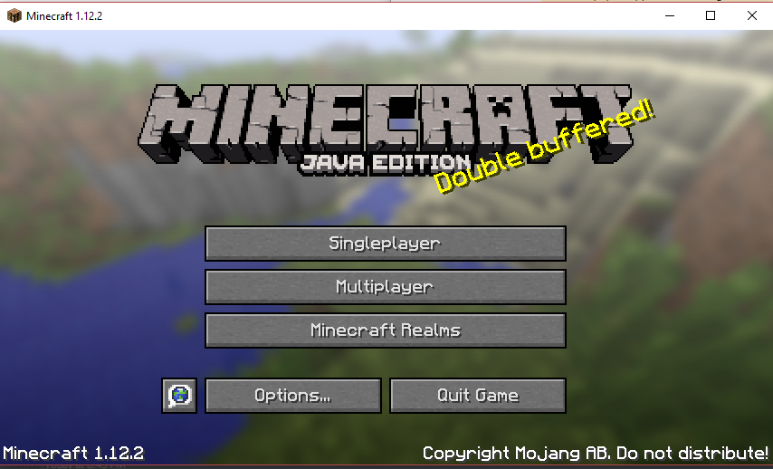
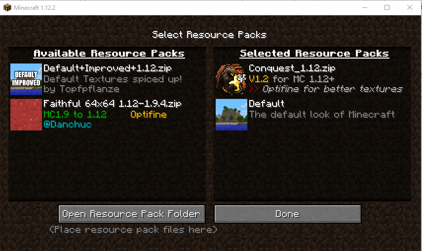
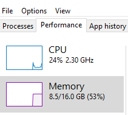
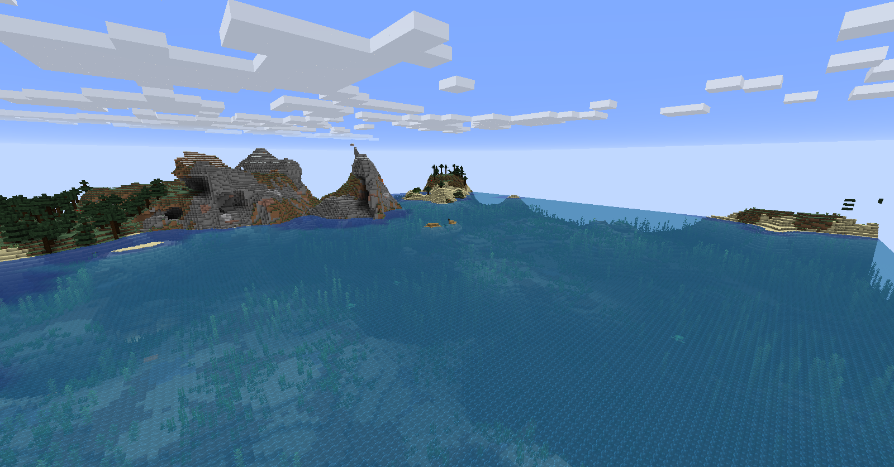
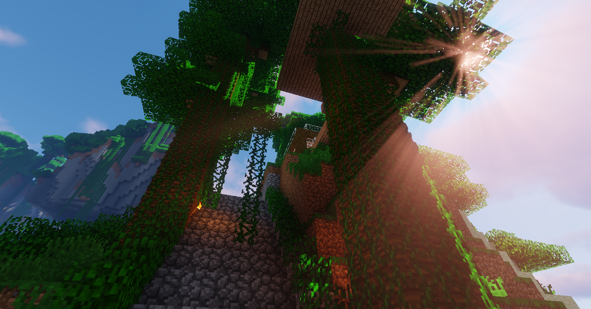
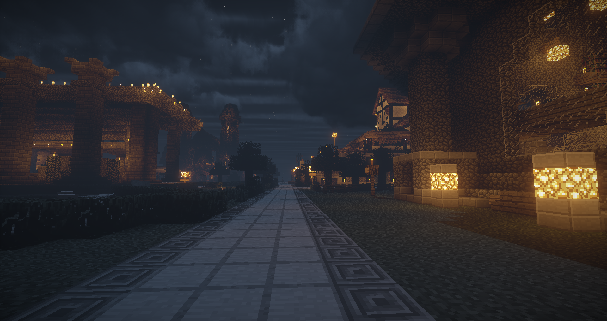

Things that you can do after installing Minecraft
Try a new Look!
Tired of seeing the same character when playing? Give them a personal and unique look by adding a skin!
Which can be done for free in two of the following ways: From the launcher on the skins tab or at Minecraft.net.
Now you might be wondering "where do I get skins from" you can get them either online already made from a website such as Planet Minecraft or create your own using this app if you have an iOS device or by using these templates
 (Steve) and
(Steve) and  (Alex) along with any graphics or image editor,
And if you're thinking those look the same its because they nearly are but "Alex" has 3 pixel wide arms while "Steve" has 4 pixel wide arms giving "Alex" a slimmer look, and make sure when uploading your skin to select the right model type and upload it in .png or .jpg format or it wont load/render properly.
(Alex) along with any graphics or image editor,
And if you're thinking those look the same its because they nearly are but "Alex" has 3 pixel wide arms while "Steve" has 4 pixel wide arms giving "Alex" a slimmer look, and make sure when uploading your skin to select the right model type and upload it in .png or .jpg format or it wont load/render properly.
Change how Minecraft Looks!
Are you loving Minecraft but cant stand the 16-bit textures? Are sounds getting repetitive? Is the music getting bland?
You can change every thing from textures to models to even fonts and sounds with Resource Packs all without modifying the code in anyway. Many resource packs can be found on Planet Minecraft and on the Minecraft Forum website.
You'll want to make sure that the resource pack is up to date with the most recent version of Minecraft so that newly added things are changed also.
Most resource packs are installed by just moving the resource pack into the "resourcepacks" folder which is located in your .minecraft folder.
Now you can get to the .minecraft folder two ways:
1.By typing these and searching based on your operating system
| OS |
Location |
| Windows |
%APPDATA%\.minecraft |
| macOS |
~/Library/Application Support/minecraft |
| Linux |
~/.minecraft |
If you're a Linux or Mac user, the "~" in the path refers to your home directory, and Folders starting with "." are hidden by default.
2.Now this second method will be a lot simpler but you'll still need to know how to get to the .minecraft folder for the things we'll go over later on.
- To start you'll need to start up Minecraft and go to the title screen ()
- Then you'll click on "Options..."
- Click on "Resource Packs..."
- And once you click on "Open Resource Pack Folder" you can move resource pack into there and you're almost done.
Now after completing one of the following methods you'll want to go back to the resource packs menu(
) and move over the ones that you want to use.
Click "Done" and Voila! you're finished adding a resource pack to spice up your Minecraft experience.
Speed Minecraft up a bit!
Whether Minecraft is taking along time to load or you just wanna have Minecraft run a bit smoother. Allowing Minecraft to use more RAM will help, but before we go into how to give Minecraft more ram you should know that
if you dont have enough ram to spare you'll just end up crashing the game or your computer. With that said 4Gb is more than enough ram to give Minecraft so you should have 6gb or more ram free under normal use, if not only allocate 2gb.
Not sure how much ram you have? Just Right click your toolbar and open task manager and goto the performance tab and you should see your total ram along with how much is currently being used. Like so ( )
Now to go about giving Minecraft more ram:
- Open the Minecraft Launcher
- Go to Launch Options
- Turn on Advanced Settings
- Select the profile for which version you use
- Switch "JVM arguments" to on
- You should see something like "-Xmx1G" change only the "1" to whatever amount of ram you wanna give Minecraft but "4" is recommended
- Hit "Save" and the next time you launch using that profile Minecraft will be able to use up to the amount of ram you gave it
Getting lag? or just want to patch some textures?
Optifine is a Minecraft optimization mod that allows Minecraft to run faster and look better with full support for HD textures and many configuration options.
This mod will also have to be installed for the next section. Luckily with Optifine you don't need to go through all the hassle of installing a mod loader you just go here and download Optifine for the version of Minecraft that you want to use it on, also when you donate $10 or more you get an in-game cape where anyone who is using Optifine can see.
After you finish downloading the Optifine .jar file double click on it and you'll be given the option to install it,If nothing shows up make sure you have the most recent version of Java installed on your PC which you can get from Java.com.
Then you just Start up the minecraft launcher and you should see a new profile called "Optifine" click play on that one, and when you get to the title screen, close Minecraft, and Congrats! You've installed the Optifine mod!
Want a more Realistic look?
Before we get started with this section make sure you have Optifine installed and know how to get to your .minecraft folder.
If you've already handled that then you just go here to look and see which shader you like the most and download it from their respective website. If you're getting a shaderpack from a GitHub repository, keep in mind that if you download the repository as a .zip you will need to extract the folder within in order for the shaderpack to be detected.
After you've downloaded your shader pack and/or extracted it you just have to go to your .minecraft folder and look for a folder called "shaderpacks" drag the shaders file into it, and you are ready to go!
Not sure why you would ever want/need Shaders? Well here a comparison of Vanilla(default) Minecraft and Minecraft with Shaders



Now dont get me wrong that looks great and all but...



